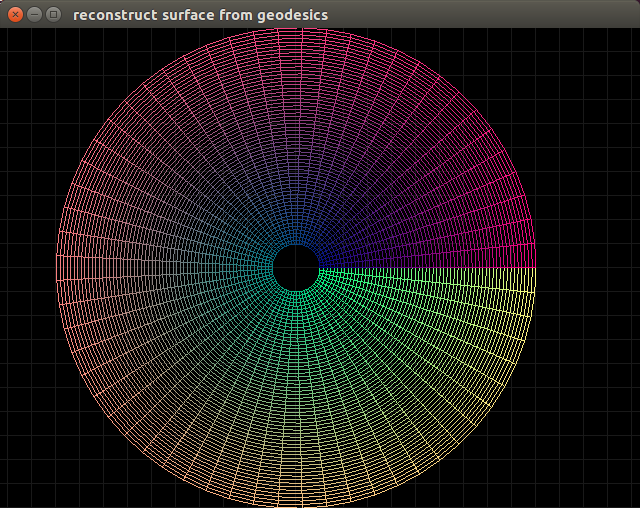
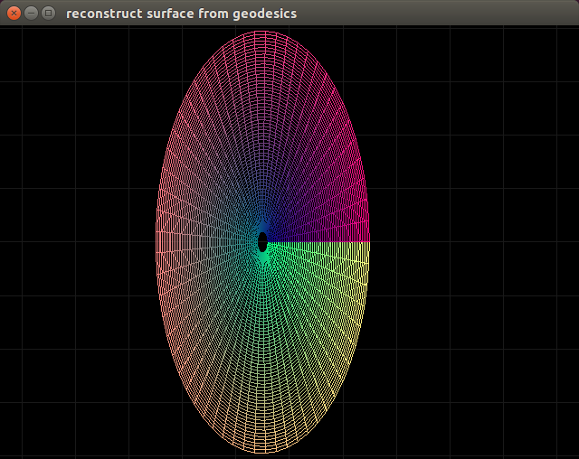

This is WIP project.
Lots of NR codes operate on a (rectangular?) grid
and likewise they keep track of only the metric and coordinate information
with no information about the background coordinate system.
This is an attempt to reconstruct the surface of the coordinate space using only the numerical metric information.
I am integrating the basis vectors using the connection coefficients, and integrating the points in background coordinate space using the basis vectors.
I've tried
- forward-Euler integration
- RK4 integration
- explicitly solving linear dynamic systems (assuming the connection is constant), which I only have available for certain classifications of matrices.
I am testing it against known metrics.
Right now just the polar metric.
Here's the difference in error between the analytical connection and the numerically computed connection:

So far I can reconstruct any surface with no extrinsic curvature, provided the correct initial coordinates and basis are provided.
For reconstructing the holonomic polar coordinates starting at ${e_a}^I(x_0) = \delta_a^I$ and $x_0 = [ r_0, \theta_0 ] = [0,1]$ we get things that work out:

If the initial coordinates are chosen to be $r_0 = 2$ then we get the following:

...and if the initial coordinates are chosen to be $r_0 = \frac{1}{2}$ then we get this:

TODO show the math that verifies this